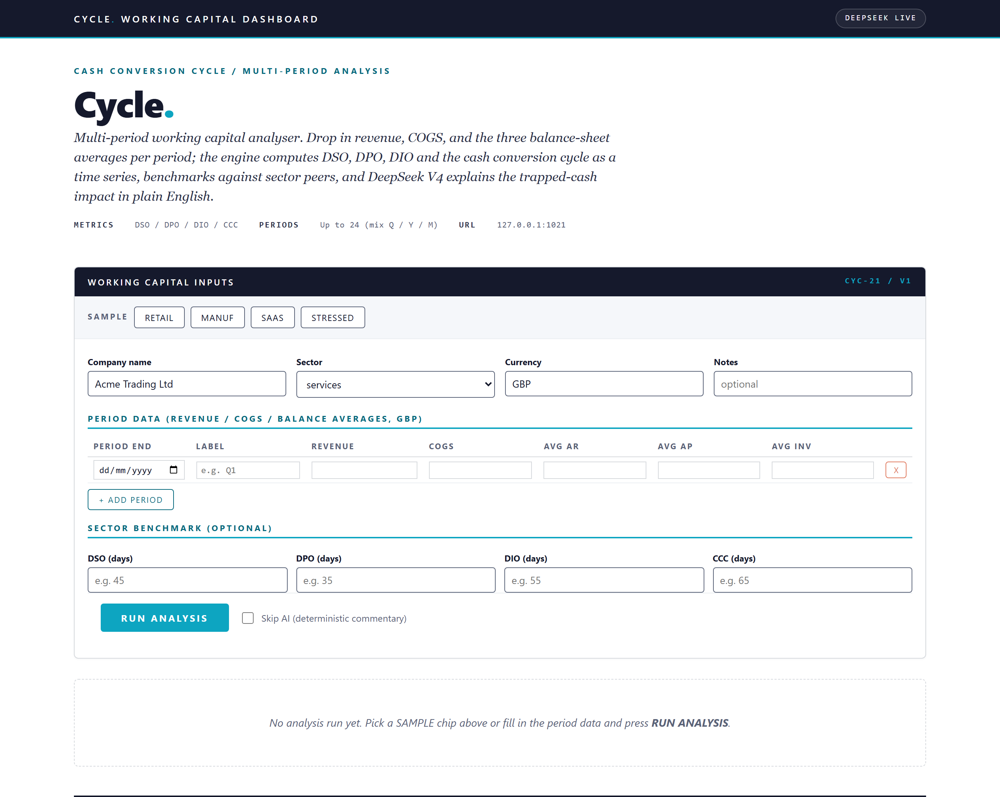
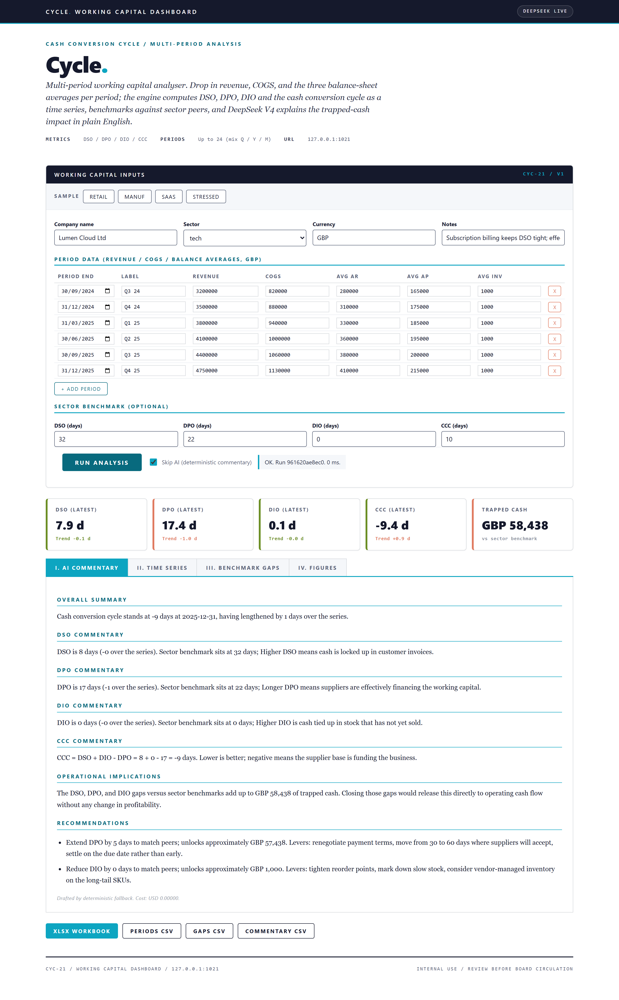
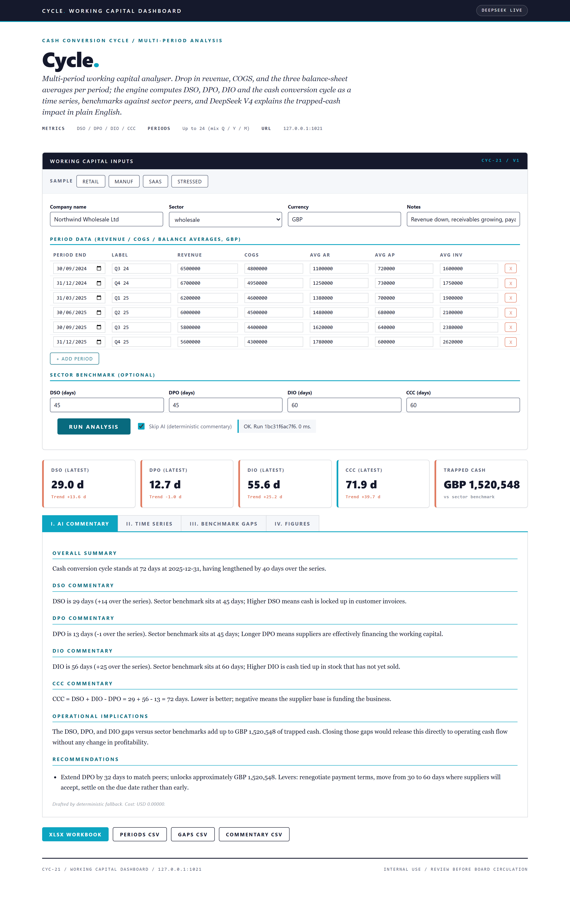
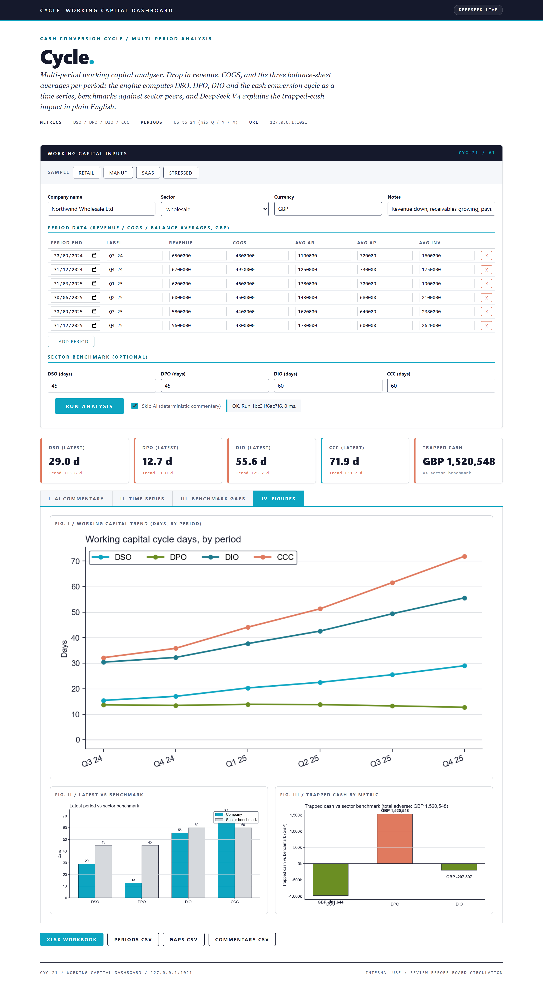

About the project
Multi-period working capital diagnostics with sector benchmarks. AI explains the trapped-cash impact.
Local Flask app + CLI that computes DSO, DPO, DIO and the cash conversion cycle from multi-period balance-sheet and P&L data, benchmarks the latest period against sector peers, and asks DeepSeek V4 to quantify trapped cash and recommend operational actions in plain English.
At a glance
- Use case
- Working-capital diagnostics, cash-tied-up review, treasury reporting
- Inputs
- Per-period revenue + COGS + 3 balance-sheet averages, optional sector benchmark
- Outputs
- DSO / DPO / DIO / CCC time series + 3 charts + Excel workbook + 3 CSVs
- Model
- Single DeepSeek call (~$0.0002 per run)
How it works
- Working-capital schema. wc_schema.py wraps the inputs in a WcInput dataclass with PeriodData sub-records (period_end, label, revenue, cogs, avg AR, avg AP, avg inventory).
- Working-capital maths. wc_maths.py computes DSO, DPO and DIO per period using a days-in-period heuristic (Q = 91.25, monthly = 30.4375, annual = 365.25).
- AI commentary. wc_ai.commentary builds a pipe-delimited digest of the time series, the latest values, the trapped-cash decomposition, and the sector benchmark deltas.
- SaaS-dashboard UI. Distinct from every prior day's palette.
- Excel + CSV exports. openpyxl writes the multi-sheet workbook (Summary with embedded charts, Periods, Gaps, Commentary, Inputs).
AI integration
DeepSeek writes trapped-cash commentary
Limitations
- Single-entity view. No group consolidation.
- GBP base only. Multi-currency working capital across entities is post-30.
- Period averages only. Real working-capital management uses ageing buckets (30/60/90/120).
- No counterparty granularity. Concentration of receivables by customer or payables by supplier is post-30.
- AI proposes, does not opine. Every recommendation needs review by a treasurer before being acted on.
- No live ERP feed. User supplies the periods.
Fun facts
- It tracks how long cash is tied up in the business (days sales, days payable, days inventory, and the cash conversion cycle) against sector benchmarks.
- It is called 'Cycle.' because that is exactly what it measures: the cash cycle.
Walk-through
- Home page (cold start) - SaaS-dashboard aesthetic. Off-white canvas, deep teal accents, orange highlights for adverse movements.
- First data run: clean SaaS profile - SaaS sample. Four quarters.
- Second data run: stressed retailer - Stressed sample. Inventory bloat, DSO drifting up, CCC expanding period over period.
- Figures tab (what the Excel + CSV exports include) - Three charts on a clean canvas: time-series line of the four metrics across periods; latest-vs-benchmark bar;...
- AI commentary (the integration) - DeepSeek V4 reads the pre-computed metrics digest and writes the four-block commentary: trapped-cash narrative,...
Screenshots



